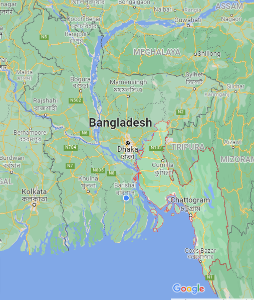

চট্টগ্রাম/CHATTOGRAM
চট্টগ্রাম (ঐতিহাসিক নাম: পোর্টো গ্র্যান্ডে এবং ইসলামাবাদ) বাংলাদেশের দ্বিতীয় বৃহত্তম শহর। বন্দরনগরী নামে পরিচিত
শহর, দেশের দক্ষিণ-পূর্বাঞ্চলের চট্টগ্রাম জেলায় অবস্থিত। বাণিজ্যিক রাজধানী হিসেবে পরিচিত পাহাড়, সমুদ্রে এবং
উপত্যকায় ঘেরা চট্টগ্রাম শহর প্রাকৃতিক সৌন্দর্যের জন্যে প্রাচ্যের রাণী হিসেবে বিখ্যাত।

নামকরণের ইতিহাস
চট্টগ্রামের প্রায় ৪৮টি নামের সন্ধান পাওয়া গেছে। এর মধ্যে রম্যভূমি, চাটিগাঁ, চাতগাও, রোসাং, চিতাগঞ্জ, জাটিগ্রাম,
আদর্শদেশ, চট্টল, চৈত্যগ্রাম, সপ্তগ্রাম, পেন্টাপোলিস প্রভৃতি উল্লেখযোগ্য। চট্টগ্রাম নামের উৎপত্তি নিয়ে বিশেষজ্ঞদের
মধ্যে মতপার্থক্য রয়েছে। পণ্ডিত বার্নোলির মতে, আরবি ‘শ্যাত (খন্ড) অর্থ বদ্বীপ, গাঙ্গ অর্থ গঙ্গা নদী থেকে চট্টগ্রাম
নামের উৎপত্তি।
ইতিহাস ও ঐতিহ্য
সীতাকুণ্ড এলাকায় পাওয়া প্রস্তরীভূত অস্ত্র এবং বিভিন্ন মানবসৃষ্ট প্রস্তর খণ্ড থেকে ধারণা করা হয় যে, এ অঞ্চলে
নব্যপ্রস্তর যুগে অস্ট্রো-এশীয়াটিক জনগোষ্ঠীর বসবাস ছিল। তবে, অচিরে মঙ্গোলদের দ্বারা তারা বিতাড়িত হয়।
লিখিত ইতিহাসে সম্ভবত প্রথম উল্লেখ গ্রিক ভৌগোলিক প্লিনির লিখিত পেরিপ্লাস। সেখানে ক্রিস নামে যে স্থানের বর্ণনা
রয়েছে ঐতিহাসিক নলিনীকান্ত ভট্টশালীর মতে সেটি বর্তমানের সন্দ্বীপ। ঐতিহাসিক ল্যাসেনের ধারণা সেখানে উল্লিখিত
পেন্টাপোলিশ আসলে চট্টগ্রামেরই আদিনাম।